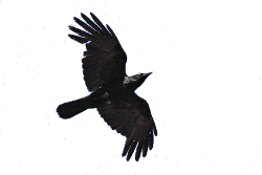

Vetési Varjú(Corvus frugilegus) |
||||
|  |
Elterjedés
Táplálkozás Természetvédelmi státusz
|
|||
ElterjedésA vetési varjú eurázsiai elterjedésű madárfaj. Költőterülete a Brit-szigetektől Japánig húzódik. Európában hiányzik a Balkán-félsziget déli területeiről, az Appenninekből és Dél-Franciaországból. Az Ibériai-félszigeten és Skandináviában csak kisebb, lokális populációi élnek. |
||||